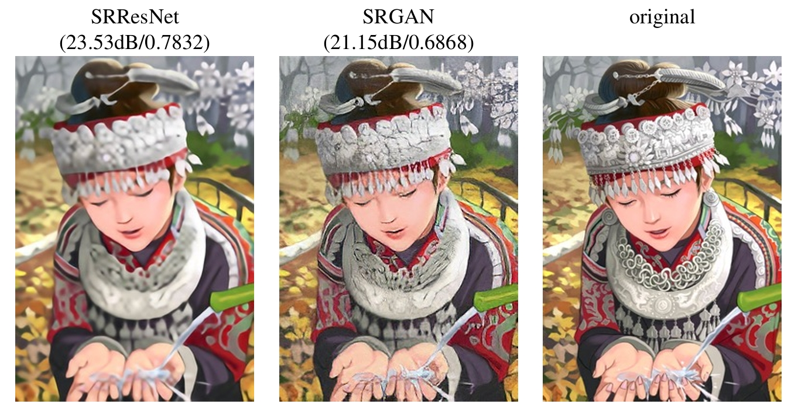
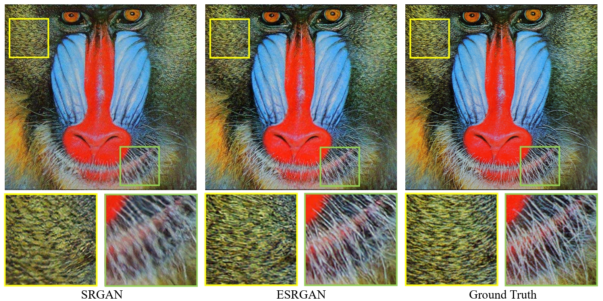
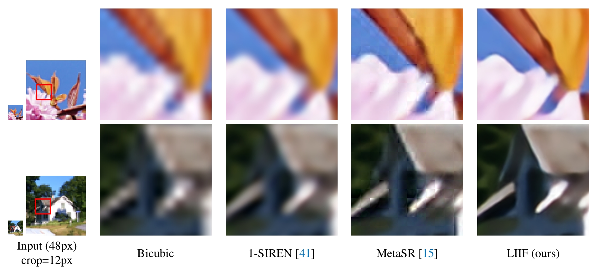

|
@七海Nanami |
文献综述
技术博客
- 彩色图像处理：色彩学基础
- 图像的仿射变换
- 霍夫变换(Hough Transform)详解
- 图像压缩技术综述
- 数字图像处理——图像退化与复原
- 超分辨率入门综述！
- 图像超分综述:一网打尽图像超分的前世今生
- CVPR 2021 论文大盘点-超分辨率篇
- 为图像盲超分学习通用的退化模型
- 轻松学习扩散模型（diffusion model）
- 走进自动驾驶传感器——激光雷达
- 6个最佳的LiDAR软件
- 3D点云目标检测算法汇总
- 激光雷达：点云语义分割算法
- 3D Segmentation点云语义分割系列论文总结
- 8个免费的激光点云数据集
经典论文
|  |
Photo-Realistic Single Image Super-Resolution Using a Generative Adversarial Network |
|  |
Enhanced Deep Residual Networks for Single Image Super-Resolution |
|  |
LIIF：Learning Continuous Image Representation with Local Implicit Image Function |